None - Fade - Slide - Convex - Concave - Zoom
选择班级
幻灯片样式
Black (default) -
White -
League -
Sky -
Beige -
Simple
Serif -
Blood -
Night -
Moon -
Solarized
读地球上的气压带和风带示意图，回答1、2题。
1.图中关于气压带甲说法正确的是( )
A.甲气压带是赤道低气压带
B.甲气压带是副热带高气压带
C.甲气压带的成因是空气受热上升
D.甲气压带的成因是空气受冷下沉
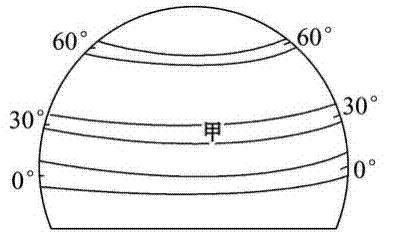2.关于气压带的正确叙述是( )
A.地球上共有4个低气压带，3个高气压带
B.高气压带都是由受冷下沉形成的
C.赤道附近是地球上的多雨地带
D.由极地高气压吹出来的风是偏北风
3.下面关于气压带和风带的叙述，错误的是( )
A．低压带气流上升，多阴雨天气
B．热的地方形成低压，冷的地方形成高压
C．全球气压带分布具有高低相间的规律
D．高压带气流下沉，多晴朗天气
4.(2011·贵州高一检测)下列四副图中正确反映北半球副热带高气压带两侧大气运动的是( )
A.A
B.B
C.C
D.D
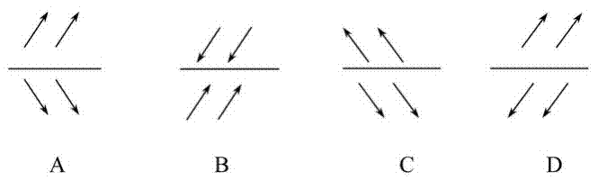5.读北半球中高纬环流示意图，分析下列说法正确的是( )
A．甲点位于30°N附近
B．乙点位于30°N附近
C．①是冷性气流
D．②盛行西北风
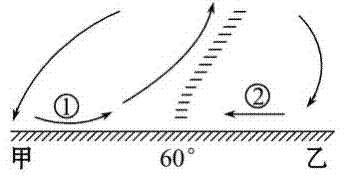6.以下各项的一组风带中，风向相同的有( )
A．南半球的信风带与北半球的信风带
B．北半球的极地东风带与南半球的极地东风带
C．南半球的信风带与南半球的极地东风带
D．南半球的中纬西风带与北半球的中纬西风带
7.气压带与风带的位置移动规律是( )
A.夏季偏北，冬季偏南
B.夏季偏南，冬季偏北
C.与太阳直射点的移动方向一致
D.与太阳直射点的移动方向相反
8．读下图，完成下列要求。
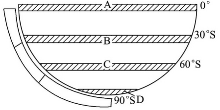(1)在图左侧添画箭头以正确表示三圈环流。
(2)写出图中字母代表的气压带名称： A[赤道低气压带，B[副热带高气压带]，C[副极地低气压带 ]，D[极地高气压带。
(3)在图中相应的位置上添画箭头表示各风带风向，并标注风带名称。
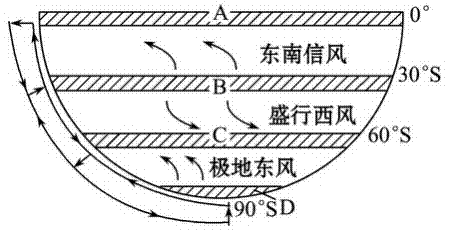(4)此图表示北半球[冬季](季节)。
9．解读图(部分纬度大气环流示意图)中信息，判断正误。正确的在括号内打“√”，错误的打“×”。
(1)图中字母A表示赤道低气压带，D表示极地高气压带，两者都是因为受热不均造成的(√ )
(2)图中字母B表示副热带高气压带，C表示副极
地低气压带，两者都是因为受热不均造成的(× )
(3)图中A、C两处气流上升，降水较多，其中
A处多对流雨，C处多锋面雨(√ )
(4)图中a为东南风，b为西南风(× )
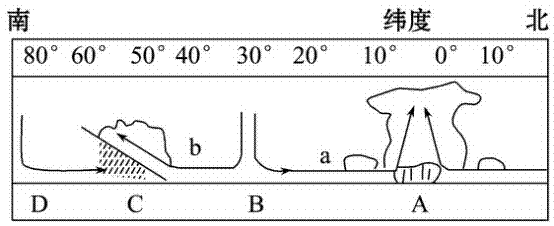读近地面的等压线图，回答1、2题。
1.如果下图代表“三圈环流”中的低纬环流圈，S线代表地球表面，则( )
A.E处气温比H处高
B.F处气压比G处低
C.气流②自西向东运动
D.G处因遇冷形成高压
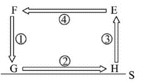2．下图中箭头表示空气运动方向。若该图为南半球三圈环流的一部分，且甲地纬度较乙地低，则( )
A．该环流圈为高纬环流
B．该环流圈为低纬环流
C．近地面，甲、乙之间盛行风向为西北风
D．近地面，甲、乙之间盛行风向为西南风
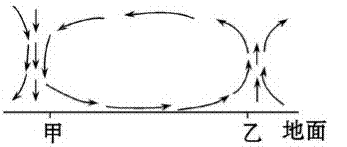3.(2010·江苏地理)2010年3月以来， 北大西洋极圈附近的冰岛发生大规模 火山喷发，火山灰蔓延使欧洲航空业 蒙受重大损失。右图为火山喷发图片。 导致冰岛火山灰蔓延到欧洲上空的气压带和气流是( )
A.副热带高气压带和西风
B.副极地低气压带和西风
C.副热带高气压带和东北风
D.副极地低气压带和东北风
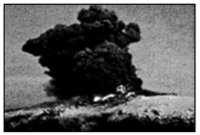下图为北半球夏季以北极点为中心的气压带、风带示意图，读图完成4、5题。下图为北半球夏季以北极点为中心的气压带、风带示意图，读图完成4、5题。
4.图中字母E所表示的气压带是( )
A.赤道低气压带
B.副热带高气压带
C.副极地低气压带
D.极地高气压带
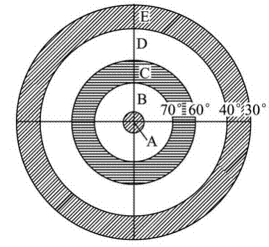5.下图中四组箭头能正确表示D带风向的是( )
A.A
B. B
C. C
D.D
读某月某条经线上部分气压带、风带和气流的相关示意图，回答6、7题。
6.图中②气压带或风带的气流运动方向和性质分别为( )
A.下沉 干燥
B.上升 湿润
C.由高纬流向低纬 干燥
D.由低纬流向高纬 湿润
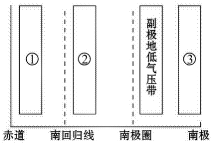7.图中显示的日期可能是( )
A.3月21日
B.6月22日
C.9月23日
D.12月22日
8.(探究性学习)根据以下材料回答问题。(22分)
材料一 在18世纪产业革命前，航海家们发现纬度30°附近总是无风，帆船进入该海区无法航行，人们把这个无风的纬度称为“马纬度”。另外，在赤道海区、南北纬60°海区都是无风带。有无风带，也有有风带。在“马纬度”和赤道之间就有一个风带，并且风向很少改变，海员们称之为信风，古代的航海家和商人在这种风的帮助下，往来于大西洋和太平洋，在各大洲进行贸易往来，因此，这种信风又有“贸易风”之称。
材料二 麦哲伦环球航海线路图
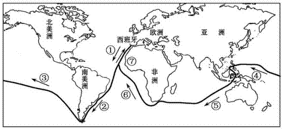(1)材料一中的“马纬度”无风，是因为该处受副热带高气压带控制，“南北纬60°海区都是无风带”是因为南北纬60°海区受副极地低气压 带控制。
(2)材料一中的“贸易风”处在副热带高气压带(气压带)和赤道低气压带(气压带)之间，在北半球为东北风，南半球为东南 风，除此之外地球上还有哪些风带？
中纬西风带、极地东风带